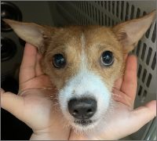
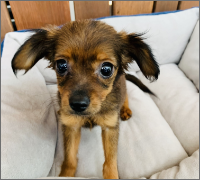
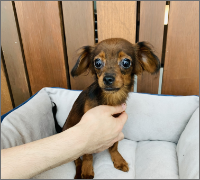
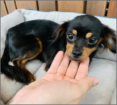
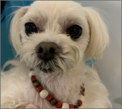
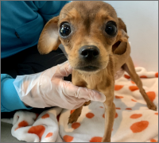
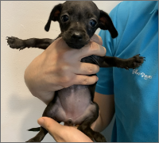
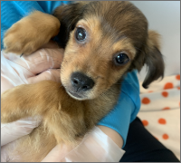

보호 중인 동물
새로운 가족이 되어주세요!

서울-서초-2021-00147
부정맥 의심, 피부,귀 양호, 슬개골 양호 , 부정교합 있음, 사람좋아하나 겁많음.

서울-서초-2021-00148
청진양호, 슬개골탈구 없음, 치석 많음 , 귀/피부 양호, 앞니 발치 필요 얌전하고 순함

서울-서초-2021-00149
피부,치아 상태 양호, 슬개골 양쪽 1-2기, 사람 좋아하며 겁은 조금 있음, 임신이력 가능성있음

서울-서초-2021-00150
우측 앞니 유치잔존, 피부,치아,귀 양호 , 부정맥의심, 사람 좋아함

서울-서초-2021-00151
부정맥 의심, 귀,치아,피부 상태 양호 , 겁많으나 사람 잘 따름

서울-서초-2021-00152
유치잔존, 청진양호, 귀지 조금 있음, 이마에 작은 탈모(피부염x , 교상흔적)얌전하나 겁 조금 있음

서울-서초-2021-00153
부정맥 의심, 나머지 모두 다 양호

서울-서초-2021-00154
부정맥 의심, 나머지 모두 양호, 유치만 있음

서울-서초-2021-00155
건강 상태 모두 양호, 사람과 강아지 좋아하며 사회성 좋음, 활발함